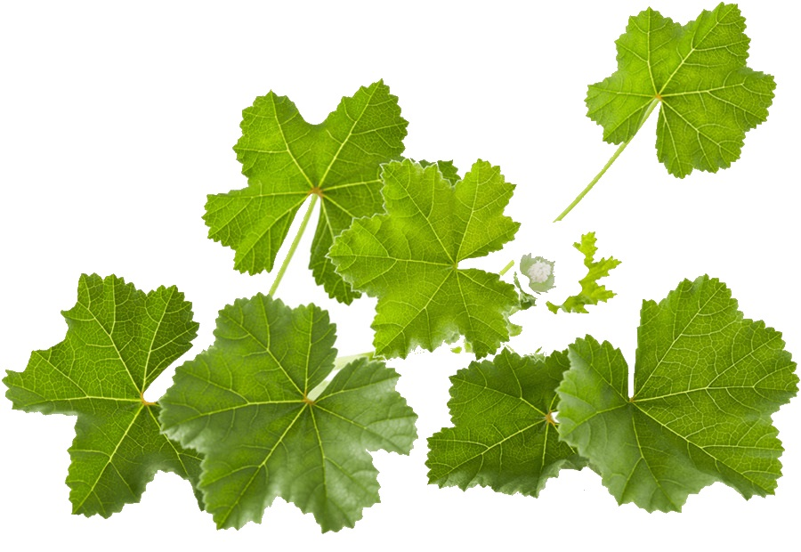

MALVA
Nome popular: malva maior, malva-alta, malva- dedente, malva-cheirosa e malva silvestre.
Nome científico: Malva sylvestris L.
Família: Malvaceae.
Descrição: Cultivada como planta ornamental pela beleza das suas flores, pertencente à família das Malváceas,
.
Regiões de cultivo: Essa espécie medicinal é originada da Europa, norte da Ásia e África e é cultivada em alguns países
da Europa central e América.
Forma de cultivo: O espaçamento deve ser de 1 metro entre as linhas e de 0,5m entre plantas. Solos encharcados e mal drenados não são recomentados,
é ideal as áreas de terras firmes e planas. O Plantio deve ser feito no início da estação chuvosa, de acordo com o local de produção..
Utilidade na medicina: Suas folhas, flores e frutos são empregados na forma de infusão no tratamento de bronquite crônica,
tosse, asma, enfisema pulmonar e coqueluche, bem como nos casos de colite e constipação intestinal. Em dose excessiva é laxativo.
Externamente, na forma de banho localizado, é empregada contra afecções da pele, contusões, furúnculos, abscessos e picadas de insetos e,
na forma de bochechos e gargarejos, contra inflamações e afecções da boca e garganta.
Contraindicações: O principal efeito colateral da malva é a intoxicação, quando utilizada em grandes doses.
Além disso, o chá de malva está contraindicado durante a gravidez e a amamentação. A Malva pode ainda comprometer a absorção de outros medicamentos
que contenham mucilagens.
Forma de aplicação: Planta muito utilizada como antisséptico e seus benefícios podem ser obtidos através de infusões das folhas para enxague bucal,
gargarejo e aplicação em lesões da pele. As folhas e flores (in natura ou secas) da Malva podem ser usadas para chás ou infusões.
Os óleos extraídos das folhas, utilizados na indústria farmacêutica, podem ser adquiridos comercialmente. Como chá: ferver cerca de meio litro de água
e ao levantar fervura adicionar 5 colheres de sopa de folhas secas (ou flores) ou 8 colheres de folhas in natura picadas, deixar cerca de 1 minuto, desligar,
deixar descansar uns 5 minutos, coar e tomar quente ou frio umas 3 vezes ao dia. Também pode ser feito gargarejo e enxágue bucal.
Pode ser usado também em compressas sobre a pele.
https://hortodidatico.ufsc.br/malva/